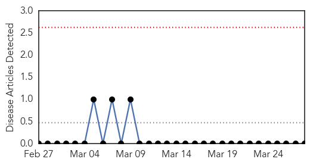
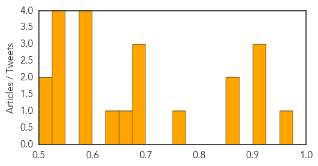

Mumps
30-Day Web Trend
0 alerts, 0 warnings

30-Day Twitter Trend
0 alerts, 0 warnings

Article Locations

Article Confidences

Top Articles:
-
No articles found for Mar 28, 2015
Top Tweets:
-
No tweets found for Mar 28, 2015
Unknown
30-Day Web Trend
0 alerts, 0 warnings
30-Day Twitter Trend
0 alerts, 0 warnings

Article Locations
Article Confidences
Top Articles:
- 0.956
- Health Ministry Denies JE Vaccination Rumor
- 0.917
- Chicago Tribune
- 0.917
- Chicago Tribune
- 0.917
- Chicago Tribune
- 0.862
- NewsDaily
- 0.862
- NewsDaily
- 0.762
- Mom furious after school sends unvaccinated son home
- 0.688
- Indiana HIV outbreak reaches ‘epidemic proportions’
- 0.685
- Deadly al Shabaab siege on Mogadishu hotel ends
- 0.676
- Likely botulism case diagnosed at Minot hospital, infant OK
- 0.661
- The Kathmandu Post
- 0.629
- Navicent Health ALS Clinic hosts party for survivors
- 0.594
- Rabies vaccine shortage bites hard
- 0.590
- Bird flu hits second Minnesota turkey farm
- 0.580
- Second Minnesota turkey farm hit by bird flu
- 0.577
- Bird flu spreads to third Minnesota turkey farm
- 0.539
- Page not found
- 0.538
- Patients looking for quick fixes, chemists & quacks spur antibiotics resistance
- 0.528
- White House unveils plan to fight antibiotic-resistant bacteria
- 0.526
- Testing finds no link between school lunch, 22 vomiting students — Portland — Bangor Daily News — BDN Maine
- 0.515
- Riviera Maya News
- 0.512
- White House Wants to Spend $1.2 Billion Fighting Antibiotic Resistance
Top Tweets:
-
No tweets found for Mar 28, 2015